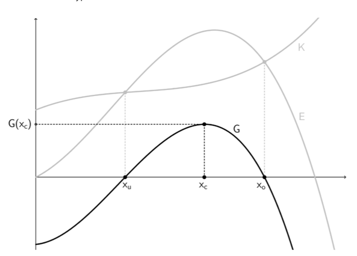

Für die HAK im Abendunterricht: Wirtschaftliche Fragen mit Funktionen beantworten — und dabei genau das nutzen, was du bei der Funktionsbetrachtung schon trainiert hast: Steigung, Krümmung, Ableitung.
6. Semester
Zur Übersicht Semester 6
· Gesamtübersicht
← Funktionsbetrachtungen
· Optimierungsprozesse →
In der Kosten- und Preistheorie geht es um Alltagsfragen aus Betrieb und Markt: Wie viel darf ich verlangen? Lohnt sich eine zusätzliche Einheit noch? Ab wann ist der Stand oder die Produktion überhaupt im Plus? Statt zu raten, beschreibt man Preis, Menge, Kosten und Erlös mit Funktionen — und nutzt die Ableitung, um Steigungen und Krümmung wirtschaftlich zu deuten.
Das passt gut zur HAK im Abendunterricht: Du bringst oft schon Berufserfahrung mit — und hier lernst du, genau diese Erfahrung mit den gleichen mathematischen Werkzeugen zu untermauern, die du im Unterricht brauchst.
Dort hast du unter anderem geübt (Lehrplan-Kern):
In diesem Kapitel ist das Themengebiet eben Wirtschaft: Die erste Ableitung ist z. B. oft „Kostenzuwachs bei einer Einheit mehr“ (Grenzkosten) oder die Steigung des Erlöses; die zweite Ableitung hilft bei Wendepunkten — etwa der Kostenkehre, wo der Kostenverlauf von „flacher werdend“ zu „steiler werdend“ wechselt.
Jemand verkauft an einem Abend belegte Brötchen am Markt. \(x\) sei die Anzahl verkaufter Stück, in ME (z. B. 1 ME = 1 Stück). Die Gesamtkosten setzen sich grob so zusammen:
Bei 40 verkauften Stück sind das etwa \(48 + 2{,}20\cdot 40 = 136\) GE Gesamtkosten. Wird jedes Stück für 4,50 GE verkauft, ist der Erlös \(40\cdot 4{,}50 = 180\) GE — also rund 44 GE Gewinn an diesem Abend (vereinfacht, ohne weitere Nebenkosten). Später im Lernpfad schreibst du solche Zusammenhänge allgemein als \(K(x)\), \(E(x)\), \(G(x)=E(x)-K(x)\) und fragst: Wo liegt das Maximum? Wo ist die Gewinnschwelle? Das sind dieselben Fragen wie bei einer Kurvendiskussion — nur mit wirtschaftlichen Namen.
Wie im Beispiel: ME zählt, was produziert oder verkauft wird; GE ist die Geldeinheit im Aufgabenmodell. Manchmal ist 1 ME = viele echte Stück — dann beim Umrechnen auf Euro oder Stück aufpassen.
Liegt eine rechnerische Grenze knapp unter einer ganzen Stückzahl, entscheidet der Sachverhalt (noch Verlust?): in Textaufgaben wird oft aufrunden, wenn eine weitere Einheit den Unterschied macht.
Aus der kompetenzorientierten Schlussformulierung (Lehrplan / Prüfungsvorbereitung) — als Checkliste nutzbar:
Prüfungen verlangen oft rechnerische Lösung und inhaltliche Deutung (z. B. Gleichgewicht, Gewinnzone, Elastizität) — nicht nur „Zahl steht da“.
Ist die Nachfrage als Preis in Abhängigkeit von der Menge \(p(x)\) gegeben, verwendet die Kurzfassung oft die Punktelastizität
\[\varepsilon(x)=-\frac{x\cdot p'(x)}{p(x)}\]Das Minus macht \(\varepsilon\) bei fallender Nachfrage (\(p'<0\)) positiv. Einordnung laut Kurzfassung: \(\varepsilon>1\) elastisch, \(\varepsilon=1\) einheitselastisch, \(\varepsilon<1\) unelastisch.
Alternativ (andere Schulbücher): \(\eta=\dfrac{\mathrm d x}{\mathrm d p}\cdot\dfrac{p}{x}\). Zum Vergleich gilt dann \(\varepsilon=-\dfrac{1}{\eta}\) — die Grenzen 1 wechseln die Seite; dieser Lernpfad folgt bei Aufgaben der Form \(\varepsilon=-\frac{x p'}{p}\).
Bogenelastizität zwischen \((x_1,p_1)\) und \((x_2,p_2)\) (Mittelwerte \(\overline{x}=\frac{x_1+x_2}{2}\), \(\overline{p}=\frac{p_1+p_2}{2}\)):
\[\varepsilon_B=\left|\frac{x_2-x_1}{p_2-p_1}\cdot\frac{\overline{p}}{\overline{x}}\right|\]Beispiel aus der Kurzfassung: \((10,80)\) und \((20,60)\) liefert \(\varepsilon_B\approx 2{,}33\) — in diesem Bogen elastisch, weil der Wert größer als \(1\) ist.
Hinweis sRDP: Elastizität ist im Mathe.zone-Skript teils als nicht prüfungsrelevant markiert — hier drin, weil sie in deinen Zusammenfassungen vorkommt.
Oben in der Leiste geht es genau in dieser Reihenfolge weiter — das entspricht den neun Stationen (nicht einer „idealen“ Unterrichtsfolge, sondern dem, was du hier wirklich nacheinander öffnest):
Hinweis: Inhaltlich hängen Markt, Kosten und Gewinn zusammen — in diesem Lernpfad kommen die Kosten zuerst, dann die klassische Marktlogik (Station 4), danach Erlös & Gewinn (Station 5).
Kurzer Abgleich mit dem Kapitel Funktionsbetrachtungen: Monotonie und Krümmung mit Hilfe von \(f'\) und \(f''\), der Begriff Ableitungsfunktion (u. a. grafisch deuten) sowie lokale Änderungsraten in verschiedenen Sachkontexten — ohne auf dieses Wirtschaftskapitel zugeschnittene Spezialbeispiele.
Die Kostenfunktion \(K(x)\) ordnet der produzierten Menge \(x\ge 0\) die Gesamtkosten zu. Wichtige Zerlegung:
Wähle einen Idealtyp — die Grafik zeigt schematisch Gesamtkosten \(K(x)\) über der Menge \(x\) (gleiche Achsenskala zum Vergleich). In der Praxis werden oft nur Ausschnitte betrachtet; hier geht es um die typische Krümmung und die Grenzkosten \(K'\) (Steigung).
Fünf Fragen im Schritt-für-Schritt-Format: erst auswählen, dann mit den Pfeilen weitergehen und am Ende auswerten.
Ertragsgesetzliche Kosten werden oft als kubisches Polynom modelliert:
\[K(x)=ax^3+bx^2+cx+d,\quad a>0,\quad d=K_f.\]Wirtschaftlich: zuerst degressiv (\(K''<0\)), an der Kostenkehre Wechsel, danach progressiv (\(K''>0\)). Sind vier Bedingungen gegeben (z. B. \(K(0)\), ein Kostenwert, eine Grenzkosteninformation, Lage der Kostenkehre \(K''=0\)), lassen sich \(a,b,c,d\) aus einem linearen Gleichungssystem bestimmen.
\(K(x)=0{,}02x^3-1{,}2x^2+30x+200\). Die Kostenkehre ist der Wendepunkt der Kostenkurve — dort wechselt die Krümmung (links eher degressiv: \(K''<0\), rechts progressiv: \(K''>0\)). Aus \(K''(x)=0{,}12x-2{,}4=0\) folgt hier \(x=20\).
\(K(x)=0{,}1x^3-3x^2+40x+300\). Wo liegt die Kostenkehre (nur \(x\)-Koordinate)?
\(K(x)=0{,}05x^3-3x^2+70x+200\). Wo liegt die Kostenkehre?
Grenzkosten beantworten die kurzfristige Frage: Was kostet mich ungefähr eine zusätzliche Einheit mehr? Mathematisch sind sie die Steigung von \(K\). Wirtschaftlich helfen sie bei der Produktionsentscheidung: Solange der zusätzliche Erlös einer weiteren ME mindestens so groß ist wie die zusätzlichen Kosten, kann Ausweiten sinnvoll sein.
Formale Definition: Grenzkosten \(=K'(x)\).
Am selben Leitbeispiel \(K(x)=0{,}02x^3-1{,}2x^2+30x+200\) wie in Station „Kosten“: Die Grenzkosten \(K'(x)\) sind die Steigung der Tangente an den Graphen von \(K\) — also der (lokale) Zuwachs der Gesamtkosten pro weiterer ME. Bewege den Berührpunkt:
Die Gesamtkosten \(K(x)\) sagen, was die gesamte produzierte Menge kostet. Für Entscheidungen in der Praxis braucht man aber oft die Kosten pro Einheit (pro ME): Damit kann man Mengen fair vergleichen, Preisuntergrenzen argumentieren und einschätzen, bei welcher Ausbringung die Produktion am wirtschaftlichsten läuft.
Darum betrachtet man die Stückkosten als Durchschnitt pro ME. Sie zeigen nicht nur „wie teuer es insgesamt ist“, sondern „wie teuer eine ME im Mittel ist“.
Formale Definition: \(\overline{K}(x)=\dfrac{K(x)}{x}\) für \(x>0\).
Variable Stückkosten: \(\overline{K}_v(x)=\dfrac{K_v(x)}{x}\).
Die Stückkosten \(\overline{K}(x)=K(x)/x\) bilden eine eigene Kurve über der Menge \(x>0\). Die tiefste Stelle (hier markiert) ist das Betriebsoptimum; dort gilt \(K'(x)=\overline{K}(x)\) (Grenzkostenkurve und Stückkostenkurve schneiden sich).
Das Betriebsoptimum zeigt die Menge, bei der die gesamten Stückkosten am kleinsten sind. Die zugehörige langfristige Preisuntergrenze gibt den Preis pro ME an, den man langfristig mindestens erzielen muss, um alle Kosten (inklusive Fixkosten) zu decken.
Formale Definition: \(x_{\mathrm{opt}}\) ist das Minimum von \(\overline{K}(x)\). Notwendige Bedingung (für \(x>0\)): \(\overline{K}'(x)=0\), äquivalent zu \[K'(x)=\overline{K}(x)=\frac{K(x)}{x}.\]
Langfristige Preisuntergrenze: \(\overline{K}(x_{\mathrm{opt}})\).
Das Betriebsminimum betrachtet nur die variablen Stückkosten. Es ist wichtig für kurzfristige Entscheidungen: Liegt der Preis unter dieser Grenze, deckt die Produktion nicht einmal die variablen Kosten.
Formale Definition: \(x_{\min}\) ist das Minimum von \(\overline{K}_v(x)\). Entsprechend gilt dort \(K'(x)=\overline{K}_v(x)\).
Kurzfristige Preisuntergrenze: \(\overline{K}_v(x_{\min})\) (Fixkosten werden nicht gedeckt).
Didaktik: In manchen Skripten steht beim Betriebsoptimum irrtümlich nur „\(K'(x)=0\)“ — das wäre ein Extremum der Gesamtkosten, nicht der Stückkosten. Merke dir die Bedingung \(K'(x)=\overline{K}(x)\).
In diesem Schritt sehen wir uns die Preisfunktion genauer an: Wie verhalten sich Nachfrage- und Angebotsseite, und wie entsteht daraus das Marktgleichgewicht?
Die Kostenfunktion lassen wir dabei bewusst kurz außer Acht, damit die Preislogik klar und ohne Vermischung sichtbar wird.
Angebotsseite \(p_A(x)\): Preis, den Produzent:innen bei Menge \(x\) fordern — typisch steigend. Häufige Schulform: \(p_A(x)=c+d\,x\) mit \(d>0\); Mindestpreis (Angebotsbeginn) \(p_A(0)=c\).
Nachfrageseite \(p_N(x)\): maximaler Preis, bei dem noch Menge \(x\) verkauft werden kann — typisch fallend. Standard: Preis-Absatz-Funktion \(p_N(x)=a-b\,x\) mit \(b>0\).
Marktgleichgewicht: Gleichsetzen \(p_N(x)=p_A(x)\) und nach \(x\) (Gleichgewichtsmenge \(x^\ast\)) auflösen; \(p^\ast\) durch Einsetzen in eine der beiden Funktionen.
Hinweis zur Modellierung: In Aufgaben heißt die fallende Preisfunktion oft schlicht \(p(x)\) (Nachfrage/Preis-Absatz). Die Bedingung \(p_A(x)\ge \overline{K}_v(x)\) bleibt wichtig, damit das Angebot die variablen Stückkosten nicht unterschreitet.
Interaktiv (\(p\)-\(x\)-Diagramm): Blaue Kurve = Nachfrage-Preis \(p_N(x)=a-b\,x\) (Preis-Absatz, fallend). Orange Kurve = Angebotsforderung \(p_A(x)=c+d\,x\) (steigend). Die Regler ändern die Parameter — der Schnittpunkt ist das Marktgleichgewicht \((x^\ast,p^\ast)\), sofern es im sinnvollen Bereich liegt.
Für \(p_N(x)=100-2x\) und \(p_A(x)=10+x\): welche Gleichgewichtsmenge \(x^\ast\) passt?
\(p(x)=p_H-20x\), \(p(5)=300\). Dann ist \(p_H\) gleich …
Interpretation der Steigung \(-20\): Pro zusätzliche verkaufte ME sinkt der erzielbare Preis um 20 GE/ME (lineares Modell — Knappheitspreis sinkt mit größerem Absatz).
Hinweis: Diese Skala dient zur Deutung. In diesem Lernpfad rechnen wir mit \(\varepsilon(x)=-\dfrac{x\,p'(x)}{p(x)}\) und klassifizieren über \(1\) (elastisch/unelastisch).
Quelle: Wikipedia – Preiselastizität.
Für \(p(x)=100-2x\) und die Form \(\varepsilon(x)=-\dfrac{x\cdot p'(x)}{p(x)}\): Wie ist die Nachfrage bei \(x=20\) einzuordnen?
Nach dem Preis-Mengen-Modell aus Schritt 4 gehen wir jetzt zum Erlös über. Aus der Preisfunktion \(p(x)\) wird über \(E(x)=x\cdot p(x)\) die Erlösfunktion.
Die Kostenfunktion lassen wir hier kurz bewusst außen vor. Es geht zuerst nur um das Verhalten von \(E(x)\), Erlösmaximum und Cournotschen Punkt.
Bei vollständigem Absatz: Erlös \(E(x)=x\cdot p(x)\) (hier \(p\) typischerweise die Preis-Absatz-Funktion der Nachfrage).
Beispiel aus der Vertiefung: \(p(x)=100-2x\), also
\[E(x)=x(100-2x)=100x-2x^2.\]Erlösmaximum: \(E'(x)=100-4x=0\) liefert \(x=25\), \(p(25)=50\), \(E(25)=1250\). Der Punkt \((25,\,50)\) auf der Nachfragekurve heißt oft Cournotscher Punkt (hier: Maximum des Erlöses entlang der Nachfrage).
Gib die Preisfunktion direkt als Term ein (z. B. \(100-2x\)). Das Applet zeichnet automatisch die zugehörige Erlösfunktion \(E(x)=x\cdot p(x)\). Die Achsen werden dabei dynamisch passend skaliert.
Für \(p(x)=100-2x\) gilt \(E(x)=100x-2x^2\). Bei welcher Menge liegt das Erlösmaximum?
Nachdem wir im vorigen Schritt den Erlös aus der Preisfunktion aufgebaut haben, sehen wir uns jetzt den Gewinn an.
Dafür werden Erlös und Kosten zusammengeführt: Entscheidend sind Gewinngrenzen, Gewinnzone und die Frage, bei welcher Menge der Gewinn am größten ist.
Gewinn ergibt sich aus Erlös minus Kosten: \(G(x)=E(x)-K(x)\). Jetzt koppeln wir also den Erlös aus Schritt 5 wieder mit der Kostenfunktion.
Sobald Kosten dazukommen, liegt das Gewinnmaximum im Allgemeinen nicht beim Erlösmaximum. Im inneren Optimum gilt \(G'(x)=0\), also äquivalent \(E'(x)=K'(x)\) (Grenzerlös = Grenzkosten).
Das eingebettete GeoGebra-Applet zeigt \(K(x)\), \(E(x)\) und \(G(x)=E(x)-K(x)\) gemeinsam. Damit kannst du Gewinngrenzen, Gewinnzone und den Abstand \(E-K\) direkt untersuchen.
Material: GeoGebra „Kosten - Erlös - Gewinn“ (Michael Langer) — bei eingeschränkter Einbettung den Link im neuen Tab öffnen.
Tipp: Beim ersten Wechsel zu dieser Station lädt das Applet automatisch. Vollbild und Reset erreichst du über die GeoGebra-Steuerleiste im Fenster.
Die Fragen kommen nacheinander. Grundlage für die Grafikfragen ist diese Gewinnkurve:

\(x_u\): untere Gewinngrenze, \(x_c\): Gewinnmaximum, \(x_o\): obere Gewinngrenze.
\(K(x)=0{,}1x^3-3x^2+40x+300\). Wie groß ist \(K_v(10)\) in GE?
\(K(x)=2x^3-60x^2+700x+6000\), \(G(x)=-40x^2+1200x-6000\). Bestimme \(a,b,c\) in \(E(x)=ax^3+bx^2+cx\).
\(a\) = \(b\) = \(c\) =
Maximiere \(G(x)=-40x^2+1200x-6000\). Bei dieser Menge: \(1\) ME \(=10\,000\) Stück, \(1\) GE \(=100\) €. Wie groß ist der Gewinn pro Stück in Euro?
Die Fragen kommen wieder nacheinander mit Navigation.
Dieses GeoGebra ist ein Beispiel-Applet, das die zentralen Inhalte der Kosten- und Preistheorie gebündelt in einem Applet darstellt (Kosten, Preis, Erlös, Gewinn und wichtige Kennpunkte).
Hier ist das vollständige Applet eingebettet (wie in deinem Material): du kannst Kostenfunktion \(K(x)\) und Preis-Absatz-Funktion \(p(x)\) eingeben, Erlös \(E(x)=x\cdot p(x)\) und Gewinn \(G(x)=E(x)-K(x)\) ein- und ausblenden sowie Kennpunkte (u. a. Kostenkehre, Höchstpreis, Sättigungsmenge, Gewinnbereich) über die Kontrollkästchen steuern.
Tipp: Nach dem Wechsel zu dieser Station lädt das Applet automatisch. Vollbild und weitere GeoGebra-Funktionen erreichst du über die Steuerleiste im iframe bzw. über den direkten Link.
Zum Abschluss vor dem Quiz: kompakte Merksätze und die Kurzfassung „ein Satz pro Begriff“ in übersichtlicher Form.
12 Aufgaben — Multiple Choice, Zuordnung (Dropdowns) und grafische Auswahl (Kurven lesen). Skript, Vertiefung und Prüfungsmuster.